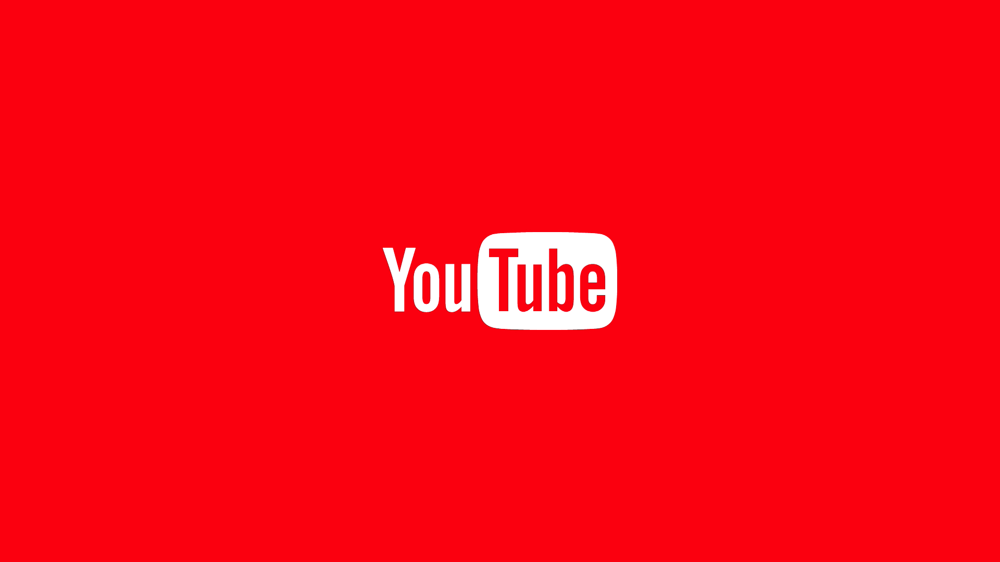

JIZTH
หน้า 1
หน้า 2
หน้า 3
หน้า 4
หน้า 5

1. ถามตัวเองให้แน่ใจอีกสักครั้ง ว่าอยากเป็น YouTuber จริงๆ ใช่หรือไม่
หากคุณอยากเป็น YouTuber เพราะเห็นว่าช่องทางนี้สร้างเงินได้ดี คุณอาจจะต้องเปลี่ยนความคิดเสียก่อน เพราะ YouTuber มากมาย ที่คุณเห็นไม่ว่าจะในประเทศไทยหรือต่างประเทศ พวกเขาเหล่านั้น ล้วนเริ่มทำ YouTube จากความชอบ ความสนุกที่อยากแชร์เรื่องราวต่างๆ ของตนเอง เเละที่สำคัญมันต้องใช้เวลาในการสร้างผู้ติดตาม บางคนอาจเร็ว บางคนอาจจะช้า ขึ้นอยู่กับปัจจัยหลายๆอย่าง ฉะนั้นถ้าคุณรู้ใจตัวเองว่าพร้อมที่จะลองเป็น YouTuber แล้ว ให้เลือกทำจากสิ่งที่ชอบหรือสิ่งที่ถนัด เมื่อทำแล้วคุณจะมีความสุขและไม่ฝืนตัวตนของตัวเอง สิ่งที่คุณชอบ จะทำให้ผลงานคุณออกมาดีแน่นอนค่ะ